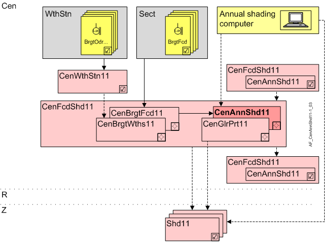

中央年度阴影 (CenAnnShd11)
Overview
应用功能》Central annual shading 11" (CenAnnShd11) 使用阈值和时间延迟以及来自网络上年度遮光计算机的信息来计算防眩光保护状态，并将其分发给下级 AFsCenAnnShd11或直接连接到连接的着色功能。
注意：如果有的话，局部防眩光保护将处于活动状态room is occupied（RShdCoo11 中房间操作模式 Comfort 和 Pre-Comfort 的默认值）。

年度遮光电脑 | 年度遮光电脑 |
岑 | 中央职能 |
CenFcdShd11 | Central facade shading for automatic 11 |
CenBrgtWths11 | Central brightness from weather station 11 |
CenBrgtFcd11 | Central brightness on facade 11 |
CenGlrPrt11 | Central anti-glare protection 11 |
CenAnnShd11 | Central annual shading 11 |
R | 房间 |
Z | 房间部分的遮阳区域 |
Shd11 | Shading 11, for shading and daylight use with venetian blinds or awnings，幕墙部门的小组成员 |
Function
Main inputs是来自 CenBrgtWths11 或 CenBrgtFcd11 的有效亮度 (BrgtEff) 以及来自网络上年度着色计算机的信息。
每年的遮阳计算机计算每个窗户是否被该区域中的物体遮挡或者反射表面（立面、水）是否将光线投射到窗户上。该信息被转发到关联的 AF Shd11。
The AFcalculates通过内部连接转发防眩光保护状态。它可以接受以下值：
- High direct
If brightness is greater than BrgtLmOn for longer than DlyOnBrgt and the sun reaches the facade.
Shading goes to the locally defined "High" position unless the annual shading computer overwrites the position due to shade or reflections. - High indirect
If brightness is greater than BrgtIdrLmOn for longer than DlyOnBrgt and the sun does NOT reach the facade.
Shading goes to the locally defined "None" position unless the annual shading computer overwrites the position due reflections. - Hold direct
If brightness is less than BrgtLmOn for longer than DlyOffBrgt.
Shading goes to the locally configured "Hold" position. - Hold indirect
If brightness is less than BrgtIdrLmOff for longer than DlyOnBrgt.
Shading goes to the locally defined "None" position unless the annual shading computer overwrites the position due reflections. - None
If the sun reaches the facade and the brightness is less than BrgtLmOff, or if the sun does not reach the facade and is brightness is less BrgtIdirLmOff for longer than 4 * DlyOffBrgt.
Shading goes to the locally configured "None" position. - Dark
If brightness is less than BrgtDarkLmOn for longer than DlyOnBrgt.
Dark is reset to None, if brightness is greater than BrgtDarkLmOff for longer than DlyOnBrgt.
Shd11 does not use them, but it is available for customized functional extensions.
延迟（DlyOnBrgt) 防止动作过于频繁。
如果发生多个快速变化，则反应时间可以按滑动比例延长（作为一种积分函数）。参数LgtSnsDlyMax和LgtSnsDlyMin都用于此目的。
Interface to local and superordinate functions
描述 | 目的 | 类型 | 来源 | 根据层次分组进行评估 |
|---|---|---|---|---|
Glare condition value | GlrCndVal | MCalcVal | 来自可选的上级 AFCenGlrPrt11 | 上级 AF 获胜，使用其值 |
Anti-glare protection condition value | GlrPrtCndVal | MCalcVal |
Interface (from annual shading computer)
For each AF CenFcdShd11
描述 | BACnet object | 类型 |
|---|---|---|
Indirect anti-glare protection angle | GlrPrtIdrAgl | AConfVal |
年度着色计算机将值写入 BACnet 对象。
For each AF Shd11
描述 | BACnet object | 类型 |
|---|---|---|
Annual shading 1:Undefined | AnnShd | MTrgVal |
年度着色计算机将值写入 BACnet 对象（Prio 13）。
- For a change
- Cyclically, every 5 minutes
Configuration
 objects
objects
描述 | 目的 | 类型 | 默认值 |
|---|---|---|---|
Brightness switch-on limit 10...150000 [lx] | BrgtLmOn | ACnfVal | 8000 [lx] |
Brightness switch-off limit 10...150000 [lx] | BrgtLmOff | ACnfVal | 6000 [lx] |
Indirect brightness switch-on limit 10...150000 [lx] | BrgtIdirLmOn | ACnfVal | 8000 [lx] |
Indirect brightness switch-off limit 10...150000 [lx] | BrgtIdirLmOff | ACnfVal | 6000 [lx] |
Darkness switch-off limit 10...150000 [lx] | BrgtDarkLmOff | ACnfVal | 500 [lx] |
Darkness switch-on limit 10...150000 [lx] | BrgtDarkLmOn | ACnfVal | 300 [lx] |
 Parameter
Parameter
描述 | 范围 | 默认值 |
|---|---|---|
Switch-on delay brightness 0...1800 [s] | DlyOnBrgt | 60 [s] |
Maximum light sensitivity delay 0...120 [min] | LgtSnsDlyMax | 60 [min] |
Minimum light sensitivity delay 0...120 [min] | LgtSnsDlyMin | 15 [min] |
Interface
界面 | 描述 | 类型 | 参考号 | 所有者 |
|---|---|---|---|---|
BrgtEff | Effective brightness | ACalcVal | ● | - |
GlrCndVal | Glare condition value 1:None | MCalcVal | ● | - |
GlrPrtCndVal | Anti-glare protection condition value 1:None | MCalcVal | ● | - |
GlrPrtIdrAgl | Indirect anti-glare protection angle | ACalcVal | ● | - |
CenFcdMst | Manager for central facade function for automatic | GrpMaster | ◉ | CenFcdShd11 |
BrgtLmOn | Brightness switch-on limit | ACnfVal | ● | - |
BrgtLmOff | Brightness switch-off limit | ACnfVal | ● | - |
BrgtIdirLmOn | Indirect brightness switch-on limit | ACnfVal | ● | - |
BrgtIdirLmOff | Indirect brightness switch-off limit | ACnfVal | ● | - |
BrgtDarkLmOff | Darkness switch-off limit | ACnfVal | ● | - |
BrgtDarkLmOn | Darkness switch-on limit | ACnfVal | ● | - |
Engineering and commissioning
Interface to annual shading computer
年度着色计算机将其信息写入两个 BACnet 对象：
- GlrPrtIdrAgl (here in AF CenAnnShd11)
- AnnShd (on each individual local AF ShdAnnGlrPrt11)
数值写为：
- In the event of a change;
- Cyclically, every 5 minutes.
BACnet object | 描述 | 类型 | 范围 |
|---|---|---|---|
GlrPrtIdrAgl | 窗户反射的太阳角度（从玻璃幕墙或水中） 360° = 无眩光 | 真实32 | -90°（从下方） |
AnnShd | 年度遮阳：可能的阳光透过窗户（仅几何信息）： | 多态 | 1:Undefined |